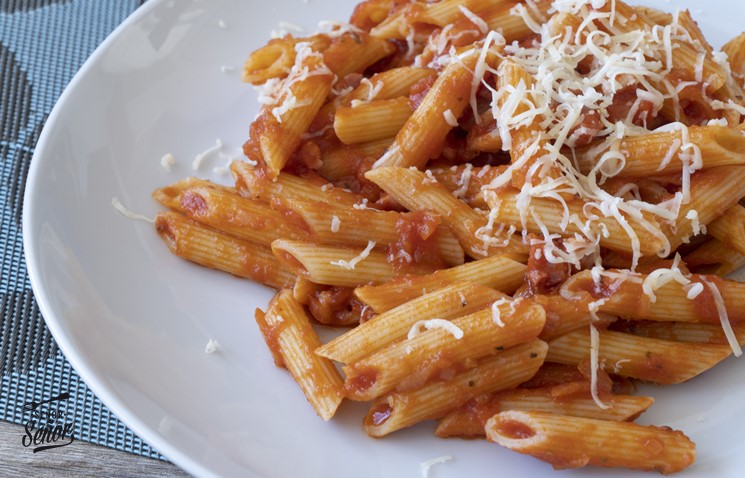

Volver al menú
Macarrones con tomatico
Macarrones con tomatico

Descripción
Esto es un plato de macarrones con tomate. No tiene más
Ingredientes
- Macarrones
- Aceite y sal
- Tomate frito
- Queso parmesano (Opcional)
Pasos
- Coger una olla y poner agua a hervir. Echar aceite y sal en la olla.
- Con el agua hirviendo, echar los macarrones en la olla (unos 3 puñados por persona).
- Esperar unos 8 minutos a que se haga la pasta.
- Echar la pasta en los platos, luego le echas el tomate frito y lo remueves todo.
- (OPCIONAL) Le echas queso parmesano por encima.